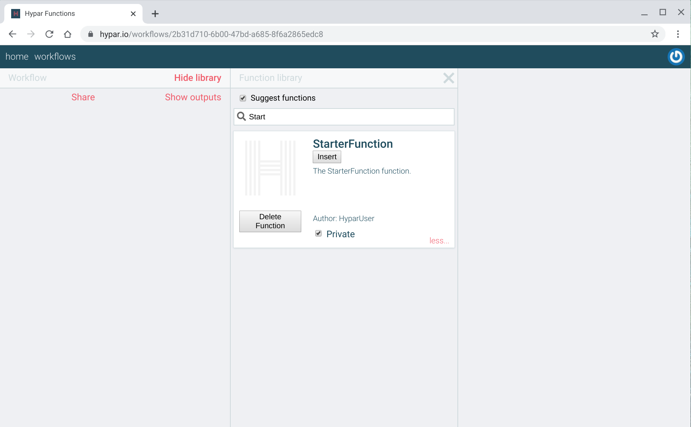
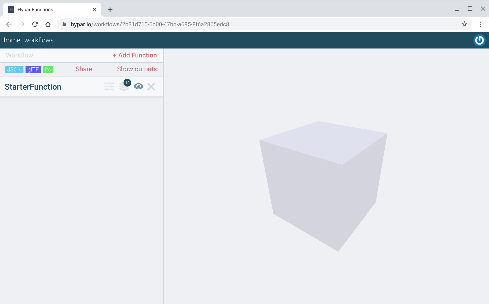
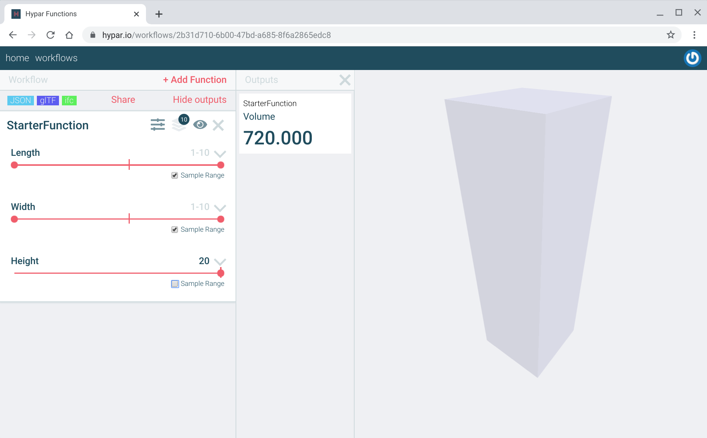
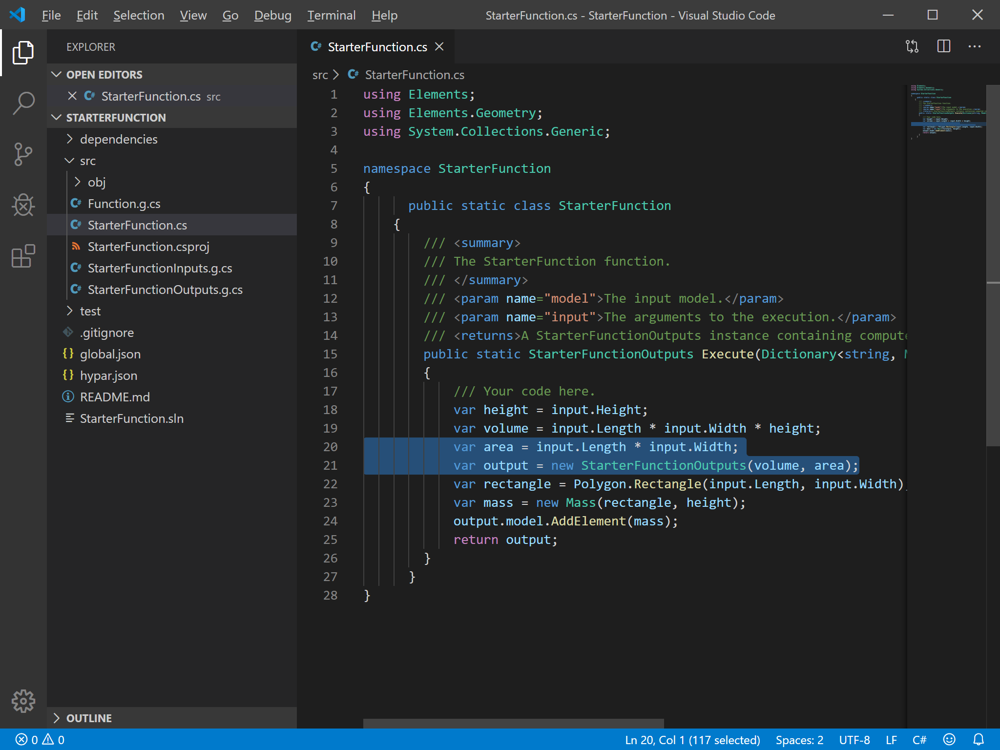

Writing Hypar Functions in C#
By uploading a function to Hypar you can produce multiple options for a building problem in just a few seconds, and combine them with other people's functions to create rich, realistic designs. In this introduction to Hypar, we'll work with a much simpler function that generates masses of variable dimensions.
Tutorial Videos
Installing and Using the Hypar CLI
Pre-Flight Check
Before getting started, there are a few things you'll need and some other things you might want to know.
Things you'll need
- A 'modern' web browser.
- VSCode (Windows, Mac OS, Linux) or any other C#-compatible code editor.
- We strongly suggest using VSCode, because we make a very helpful Hypar Plugin for VSCode (see the next bullet).
- If you're using VSCode, install the Hypar Function Builder extension:
- Select "Extensions" in the "View" menu.
- Search for "Hypar".
- Click "Install" on Hypar Function Builder.
- Access to a command line for your operating system.
- We'll use the Windows Command Prompt for this guide, but other operating system command prompts should work similarly.
- Windows: Hypar is known to work on the windows command prompt and git bash.
- Some users have experienced issues using Hypar on PowerShell. PowerShell is not recommended.
- Mac: Hypar is known to work on bash and zsh.
- Linux: Hypar is known to work on zsh.
- Windows: Hypar is known to work on the windows command prompt and git bash.
- We'll use the Windows Command Prompt for this guide, but other operating system command prompts should work similarly.
- .NET Core 3.1
- Hypar uses the cross-platform dotnet framework created and maintained by Microsoft. The version number is important! There might be issues with earlier or later versions of .NET Core.
Things you might want to know
- Basic familiarity with the C# programming language will help, but if you're not familiar with C# we'll do our best to walk you through making changes to the initial code you'll get by following the steps in this guide.
- If you want to share your Hypar functions, you have to explicitly make your work public, so don't worry that perfect strangers are judging your work. They will, but only if you decide to make them public.
- The procedures you'll use in this guide compile your code on your desktop and only upload the resulting binary file. No one at Hypar will examine your source code because we won't have it unless you make it public by some other means or if you send it to us so we can help you solve a problem.
- None of the Hypar libraries you'll use in this guide bind your code to Hypar web services. For example, if you'd like to use the Elements library for a desktop application, it's an open source project on GitHub and will always be free for anyone to use or extend. You don't even have to tell us you're using it.
Installing and Using the Hypar Command Line Interface (CLI)
Open a Command Prompt (cmd.exe on Windows, or Terminal on Mac or Linux) and input the following command:
dotnet tool install -g hypar.cli

Close and reopen the Command Prompt to finish the installation.
Now you're ready to send your first function to Hypar. First use the command prompt cd (for "change directory") command to navigate to the folder where you'd like to place your function project.
Try this in the Command Prompt:
hypar new

For consistency with the rest of this example give your function the name StarterFunction. A bunch of stuff happens that we'll explain in a moment, but in the meantime enter your Hypar user name and password:

Now more stuff happens, but the important thing right now is to know that your function has been published (privately) to Hypar!

With one command you've created a web application that we're going to customize and publish again (and again and again), but first let's see what we've got so far. Back to https://hypar.io.
This time, click on the sign in button on the left below the logo...

...and sign in using your new account:

Once you sign in, you'll see something like the following screen:

Create a new workflow using the form on the bottom left. Type in any name you want (perhaps "Starter workflow") and click Create. You'll see this screen:
Click Add Function in the top left of the screen to open the function library and search for "StarterFunction" (or whatever you named your function).
Click on the more... link on the lower right of your StarterFunction card:

That checked Private box is what's keeping your new function invisible to everyone but you and the administrators of Hypar. If you ever want everyone to see your function, you'll have to uncheck that box and read our warning that the world is about to see your work. Try changing the setting, then make it private again.
Now let's make some options. Click Insert on StarterFunction and hide the Function Library. Your function will run automatically and you should see something like this:

You've run a web application that you created by just typing hypar new! Click in the 3D view to zoom, pan, and rotate the result. Now click on StarterFunction's Settings and Alternatives buttons, the first two buttons after its name on the left:

Now let's go back and look at everything that happened and what it means for writing your own custom Hypar functions in the future. We'll place blue boxes around what we're talking about, like this:
The first thing that happened was that the hypar new command created a new local project folder within the current folder. In Windows Explorer, the new folder looks like this:
The next thing hypar new did was add a test project into that folder, in the folder called test above. This is the project that will help you test your function updates locally before uploading them to Hypar.

Then the hypar new command created a hypar.json file that you can see in the StarterFunction folder above. We'll use this file to customize and extend the default function.

Next the hypar new command executed something called hypar init, which created a couple of more important files in your project, but which you shouldn't have to worry about except to understand what they do and how they change as you edit your hypar.json file.

If you open the src folder, you'll see these files:

The three files with names containing .g.cs are generated code files. You never need to edit these directly but it's important to know that the hypar init command generates them from the hypar.json file that we'll look at in a moment, because when you make changes to the hypar.json file you'll have to run hypar init again to update these files.
These three files are what make your C# code compatible with Hypar services. They're kept separate so that your code won't become directly dependent on the Hypar platform but can easily take advantage of its services.
After hypar init executes, there's some housekeeping that completes the local changes, then after you sign in the hypar new command uploads your new function.
Go back and open the StarterFunction directory in VSCode:
VSCode will look like this, with all of the files in the left column:

Now use Code to open the hypar.json file, and we'll look at how this configuration influences what you see when you work with a function on Hypar.
The "inputs" section of the hypar.json determines what inputs you see for the uploaded function:

The "outputs" section determines the values you see associated with each option:
In the next exercise, we're going add a new Height input to this function.
Adding a new function input
First, let's open the src/StarterFunctionInputs.g.cs file in Code and look at the StarterFunctionInputs class to see how the hypar.json turns into code. Note how the corresponding entries become public class properties:
Edit your hypar.json file to look like the one illustrated below. Copy the "Width" output and change the copy's name and description values to refer to "Height" and "The height" instead of "Width" and "The width". Insert a comma after the "Width" section's closing brace now that it's no longer the last input field:
Save this file and open the command prompt again, using the cd command to change the current directory to your project folder. Then run hypar init:
hypar init reads the json file to understand how to regenerate the input and output class files as well as the function file. Open StarterFunctionInputs.g.cs to see what changed.

Now that we have this new entry for Height, we have to tell our function to use it. Open StarterFunction.cs and change the var height = 1.0; line to use the height input value instead:
Now we have our new Height input. Let's send this up to Hypar using hypar publish and see how our function works now:

Opening StarterFunction on Hypar again, we now have a Height input in addition to the Length and Width inputs. Unchecking "Sample Range" on height and setting its slider to 10m gives us a set of alternatives with identical heights and varied lengths and widths:
What if we wanted a maximum height of 20m? Let's go back to the hypar.json file and change the maximum for the input range:

Save the file and run hypar publish again at the command prompt:
When we open StarterFunction on Hypar again, the range can now be set to 20:

Adding a new function output
Hypar can also generate non-geometric data. In Hypar, click "Show outputs" in the top left. You should see something like this, although your volume result might be different:

What if we also wanted to display the area of our cube? For this exercise we'll add a new output to the hypar.json and calculate the result we need. Add these new lines to the hypar.json:

Copy the "Volume" section down and change its "name" field to "Area" and its "description" to "The area". After those changes, on the command line in the project folder run hypar init:
Now in Code let's see what changed. Open src/StarterFunctionOutputs.g.cs and you should see your new Area output under the Volume output:

Also note that the StarterFunctionOutputs constructor at the bottom of the illustration has a new double area argument. Calculate and add the area output like this:

Once you've made that change and saved the file, publish the function to Hypar again:
Return to Hypar, reload the page, and force StarterFunction to run again by tweaking one of its input parameters. Click Show outputs and you should see the result of your area calculation:
What's next?
Congratulations on creating your first Hypar function! There's more to learn, but you should start thinking about building a real, useful function. Here are a few tips for deciding what to make:
- Solve one small problem. Hypar Functions are easy to compose. No single function needs to do too much on its own.
- Take something you've done before and do it again on Hypar.
- Scratch an itch. What do you hate doing manually? What would look cool? What would look silly?
- You don't need to be original. Just get started. Feel free to make another version of something you've already seen.
Here are some other good resources:
- Hypar's Discord live chat. Lots of people should be there to answer questions or share ideas.
- Hypar's YouTube channel has walkthrough videos and livestreams.
- The Elements GitHub repository and the tabs on top of this page have more information about Hypar's data model.
- Hypar's Building Blocks repo has the source code for many Hypar functions. Read those to see how they work, and feel free to branch or improve any of them.